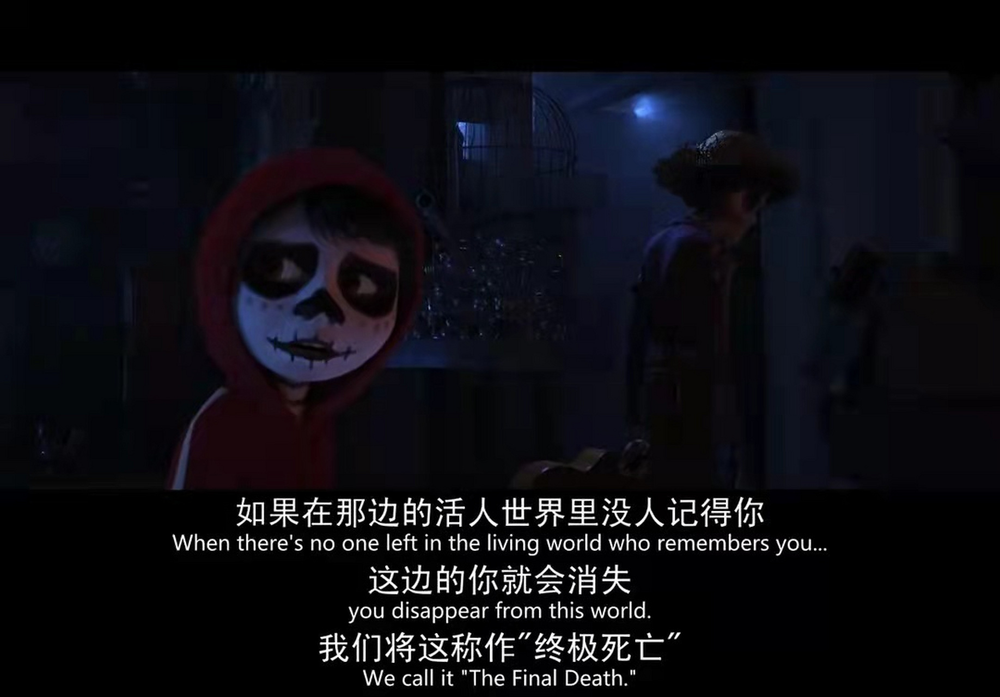
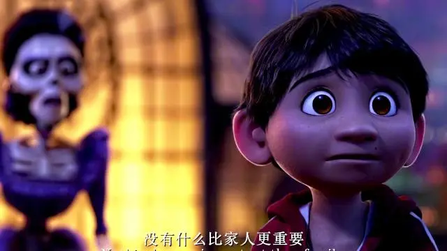
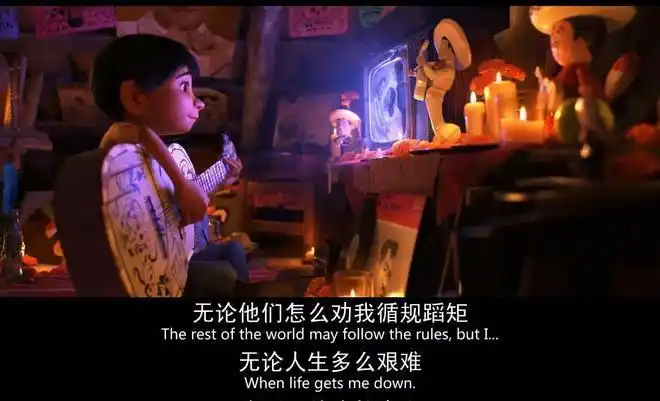
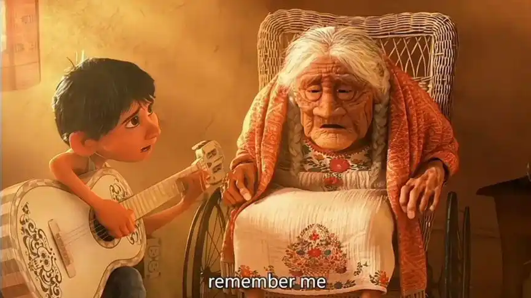

“真正的死亡是世界上再没有一个人记得你。”“死亡不是生命的终点，遗忘才是。” 这些台词深刻地探讨了死亡的真正含义，让人们意识到记忆和遗忘对于生命的重要性.

“家人是比梦想更重要的事情。”这句话强调了亲情在人生中的重要地位，提醒人们在追求梦想的同时不要忽视家人.


“在爱的记忆消失以前，请记住我。” 表达了对亲人、爱人的眷恋和不舍，希望自己能永远留在所爱之人的记忆中.

“音乐不仅是我的工作，也是生活。”体现了主人公对音乐的热爱，以及音乐在其生命中的重要意义.
点击此处回到主页